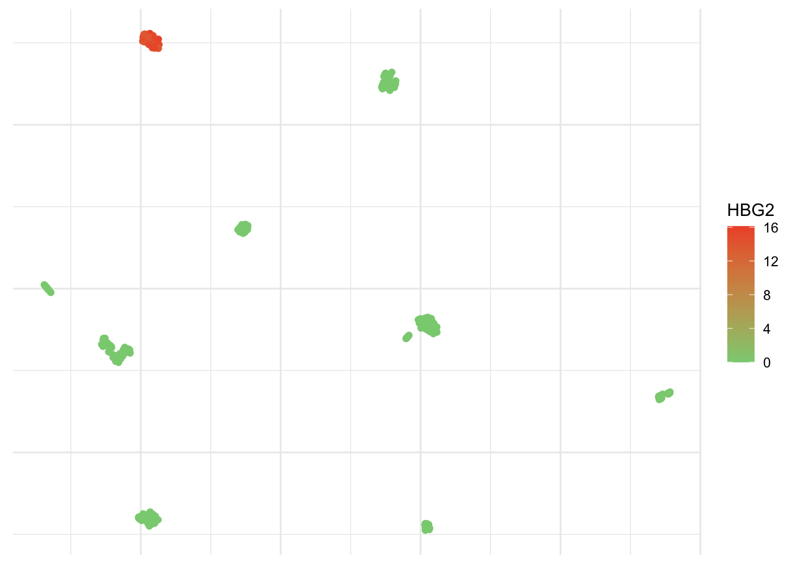
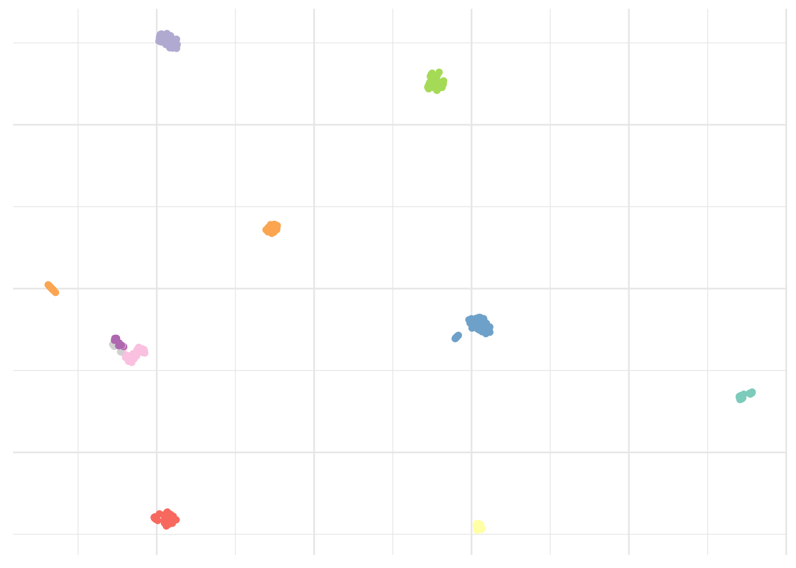

Let’s talk biology. That’s my background and it has become really hype lately with several companies now offering to sequence your genome paving the way to better understanding of the molecular basis of disease and personalized medicine. Nowadays, there is a dramatic increase in the number of large, highly complex datasets being generated from experiments, quantifying as many different variables such as gene, protein, or population-wide genetic variation. Here, there is no interest in prediction, mostly because there is no associated response variable.
Consider single cells. It’s much easier–as well as way cheaper–to sequence a bunch of single cells rather than obtaining the same amount of information about single individuals. Unfortunately, the budget to write these blog posts is limited by the amount of out of my pocket money I can inject in and this quite directly correlates with my pocket’s size. Long story short, there is no way I can compete with big pharmaceutical companies. I found these 301 cells open access on the web (Pollen et al., 2014).
After some initial cleaning, 100 genes of interest have been selected that we can use to discover patterns. In this case the genes are the observations and the patterns could be different cell populations.
Why wouldn’t we simply compute all possibilities
Good question! Glad you asked, really. This certainly has a lot to do with the number of hypothesis growing exponentially with the number of attributes. If we define the attributes here as Boolean, that is cell c expresses gene g yes or no, we clearly oversimplify this problem. Nonetheless, each new attribute doubles the number of possible instances by taking each previous instance and extending it with a yes or no for that attribute. In turn, the rate of change–the change per instant or unit of time–becomes proportional to the current value.
Think about a tiny Escherichia coli, commonly found in the lower intestinal tract of warm blooded organisms and that will happily divide into two every 15 minutes (roughly) provided there is enough nutrient.
# Define an expGro function
expGro = function(x){(1e-18)*(2^x)}
# Feed the E. coli
ggplot(data.frame(x = c(1, 130)), aes(x = x)) +
stat_function(fun = expGro, geom = "line" ) +
theme_minimal() +
scale_x_continuous(breaks = c(40, 80, 120),
labels = c("10", "20", "30")) +
geom_hline(aes(yintercept = 1.09751e+21), colour = "#EB821B", linetype = "dashed") +
annotate("text", x = 10, y = 1.14875e+21, colour = "#EB821B", label = "Volume of the Earth") +
labs(x = "Hours", y = "Volume",
title = "Exponential Growth is Scary",
subtitle = "Growth of a single E. coli")Very scary indeed. It would take about one day and a half starting with a single Escherichia coli to divide into a bacterial mass as big as the Earth itself. Think about this next time you consider adding sugar to your coffee, or worse, succumb to temptation and getting donuts too.
The truth is generally seen, rarely heard (B. Gracian)
Unsupervised learning is more descriptive and definitively more subjective than its supervised counterpart as there is neither simple goal nor universally accepted cross validation. It should be approached as part of an exploratory data analysis where visualization is fundamental. A good visualization will show you things that you didn’t expect, or help raise new questions about the data.
We are here faced with a large set of correlated variables, i.e. gene expression. Each cell might have a unique signature but cells belonging to the same population will tend to have a similar profile and principal components allow us to summarize this dataset with a smaller number of representative variables that collectively should explain most of the variability. It is a powerful approach that usually performs really well on this type of data even though it is quite naive to think all relations could be linear.
# Compute principal components
pca <- pollen %>%
select_if(is.numeric) %>%
prcomp()
pca_plot <- data.frame(x = pca$x[,1],
y = pca$x[,2])ggplot(pca_plot) +
geom_point(aes(x = x, y = y)) +
theme_minimal() +
theme(legend.title = element_blank(),
axis.text = element_blank(),
axis.title = element_blank())There you go, populations! No surprise here, it already works really well. But are there alternatives?
Yes, looking at nonlinear dimensionality reduction method, t-SNE automatically pops into my mind. It can deal with more complex nonlinear patterns of Gaussian clusters in multidimensional space compared to PCA so it is good for single cell RNA-sequencing analysis. Although is not suited to finding outliers because of the way the samples are arranged that does not directly represent distance, like in PCA. Instead t-SNE preserves local distance at the expensive of global distance. And it’s easy to run in R.
# Run t-SNE
tsne <- pollen %>%
select_if(is.numeric) %>%
Rtsne()
tsne_plot <- data.frame(x = tsne$Y[,1],
y = tsne$Y[,2])ggplot(tsne_plot) +
geom_point(aes(x = x, y = y)) +
theme_minimal() +
theme(legend.title = element_blank(),
axis.text = element_blank(),
axis.title = element_blank())Neat! By the way, a PCA was used here too as a preprocessing step to get rid of all the zeros.
Oh yes, and of course there is UMAP. UMAP is a non linear dimensionality reduction algorithm of the same family as t-SNE. In the first phase of UMAP a weighted k-nearest neighbor graph is computed, in the second a low dimensionality layout of this is then calculated. Then the embedded data points can be visualized in a new space and compared with other variables of interest. It can be used for the analysis of many types of data, including, single-cell RNA-sequencing and better preserves global distances.
# Perform UMAP
umap <- pollen %>%
select_if(is.numeric) %>%
umap()
umap_plot <- data.frame(x = umap$layout[,1],
y = umap$layout[,2])ggplot(umap_plot) +
geom_point(aes(x = x, y = y)) +
theme_minimal() +
theme(legend.title = element_blank(),
axis.text = element_blank(),
axis.title = element_blank())
Yes, I definitively like this one a lot! You can add a color scale and risk an educated guess.
ggplot(umap_plot) +
geom_point(aes(x = x, y = y, col = pollen$HBG2)) +
scale_colour_gradient(low = "#8acf81",
high = "#ef5534",
name = "HBG2") +
theme_minimal() +
theme(axis.text = element_blank(),
axis.title = element_blank())
You’ve probably checked already, but prcomp is part of the stats packages, while Rtsne and umap are part of the, well, Rtsne and umap libraries, respectively. There are many arguments you can play with to adapt this to other datasets and get better embedding in a lower number of dimensions in order to see patterns and trends in the data.
Algorithms are just opinions expressed in numbers (C. O’Neil)
As good as visualization is, it doesn’t scale up particularly well. Once we have observed these populations, we certainly would like to cluster them. That is partition them into distinct groups so that the observations within each group are quite similar to each other, while observations in different groups are quite different from each other.
One of the simplest, but still very elegant approach to perform this is the k-means clustering that will partition a dataset into K distinct, non-overlapping clusters. Like all clustering methods, it is biased and not completely arbitrary. We must first specify the desired number of cluster K. As a rule of thumb, I suggest we use our previous observations of about 9 islands and add ~10%. It is well known that some people have a green thumb. Mine is normally pink but gives me this unusual ability to find a good K.
# Set seed
set.seed(123)# Cluster dataset
kmeans <- pollen %>%
select_if(is.numeric) %>%
kmeans(10, nstart = 20)ggplot(umap_plot) +
geom_point(aes(x = x, y = y, col = as.factor(kmeans$cluster))) +
scale_color_brewer(palette = "Set3") +
theme_minimal() +
theme(legend.position = "none",
axis.text = element_blank(),
axis.title = element_blank())That looks about right. As I said simple but still very elegant. What else?
Hierarchical clustering is an alternative approach which does not force us to commit to a particular number choice of K. At least not upfront. It results in a dendrogram that can be used to obtain any number of clusters. However, often the choice of where to cut isn’t really clear and a visual inspection only slightly helps to select a sensible number of clusters, based on the height of the fusion. We will skip this step here, as 10 looked like a good approximation.
# Cluster dataset
hClust <- pollen %>%
select_if(is.numeric) %>%
dist() %>%
hclust() %>%
cutree(10)ggplot(umap_plot) +
geom_point(aes(x = x, y = y, col = as.factor(hClust))) +
scale_color_brewer(palette = "Set3") +
theme_minimal() +
theme(legend.position = "none",
axis.text = element_blank(),
axis.title = element_blank())
Looks okay too. Although again, not perfect. Are there any other options?
Alternatively, we could use the Phenograph algorithm, which is a clustering method designed more specifically for high-dimensional single-cell data analysis. It works by creating a graph (“network”) representing phenotypic similarities between cells by calculating the Jaccard coefficient between nearest-neighbor sets, and then identifying communities using the well known Louvain method in this graph. In this case the k is the number of nearest neighbors considered by the algorithm.
# Cluster dataset
pheno <- pollen %>%
select_if(is.numeric) %>%
Rphenograph(k = 15)ggplot(umap_plot) +
geom_point(aes(x = x, y = y, col = as.factor(membership(pheno[[2]])))) +
scale_color_brewer(palette = "Set3") +
theme_minimal() +
theme(legend.position = "none",
axis.text = element_blank(),
axis.title = element_blank())Result is clearly improved here and we seem to have captured all islands.
As previously mentioned, unsupervised learning is rather subjective and it usually isn’t possible to access the quality of the results obtained. However, in this particular case, the dataset indicates the real cell type. This looks pretty close to the Phenograph algorithm result.
ggplot(umap_plot) +
geom_point(aes(x = x, y = y, col = pollen$pollen.celltypes)) +
scale_color_brewer(palette = "Set3") +
theme_minimal() +
theme(legend.title = element_blank(),
axis.text = element_blank(),
axis.title = element_blank())The only populations we were not able to capture correctly are GW16, GW21, and GW21+3. This isn’t really surprising considering these appear to be very close on the visualization and as one can guess from their names, are very similar indeed. Although treated, they don’t differ from each other.
Alright, can we compare these populations now
I believe we do yes.
Simply pivoting the data using the new pivot_longer from tidyr we can visualize as beautiful heatmap with a little help from the viridis package. Here for the four first clusters only.
# Pivot the data
pheno_tbl <- pollen %>%
select_if(is.numeric) %>%
add_column(as.factor(membership(pheno[[2]]))) %>%
rename(cluster = `as.factor(membership(pheno[[2]]))`) %>%
pivot_longer(-cluster, names_to = "gene", values_to = "expression")pheno_tbl %>%
filter(cluster %in% c(1:4)) %>%
ggplot(aes(x = gene, y = cluster, fill = log2(expression+.1))) +
geom_tile(color = "white", size = .1) +
scale_fill_viridis() +
theme_minimal() +
coord_flip() +
theme(legend.position = "none",
axis.text.y = element_text(size = 4),
axis.title = element_blank())It’s a bit messy, agreed. Let’s filter the most variable genes using the genefilter library to visualize them as violin plot. Here the four most variable ones only.
# Select four most variable genes
topVar <- pollen %>%
select(-contains("Spike")) %>%
select_if(is.numeric) %>%
t %>%
rowVars %>%
head(4)pheno_tbl %>%
filter(gene %in% names(topVar)) %>%
ggplot(aes(x = cluster, y = expression, fill = gene)) +
geom_violin(scale = "width") +
scale_fill_brewer(palette = "Set3") +
theme_minimal() +
theme(legend.position = "none",
axis.text.y = element_blank(),
axis.title = element_blank()) +
facet_wrap(~gene)Subject expertise matters
While doing unsupervised learning, instead of predicting a particular output variable, we are interested in determining whether there are groups, or clusters, among the observations based on a set of measurements. In this type of learning we seek to find previously unknown patterns in a dataset without pre-existing labels. This can be applied in many different domains to uncover the existence of rare groups within a larger population that may never have been seen before. Although it was already possible to study the profile of single cells for a couple of markers, single-cell RNA-sequencing now allows to study the expression profiles of individual cells. And that’s exciting!
It is not possible to obtain complete information on every RNA expressed by each cell, due to the small amount of material available, but patterns of gene expression can be identified through gene clustering analyses. In this particular dataset, we have 11 different cell types and we manage to visualize all cell lines. A good visualization is essential and can also hint that you’re asking the wrong question, or you need to collect different data. Once you have made your questions sufficiently precise, you can use a model to answer them.